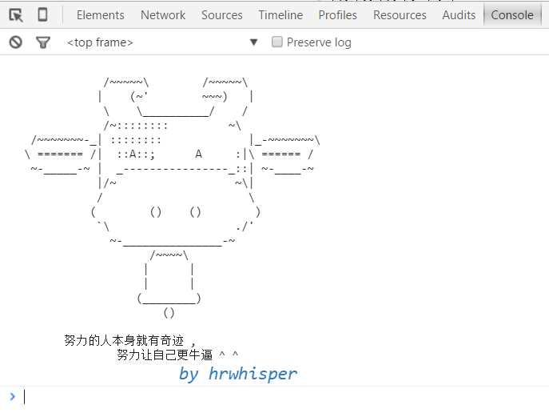
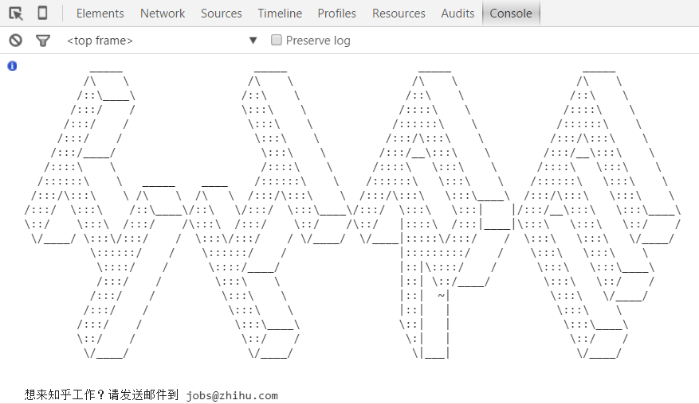
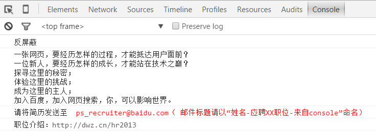
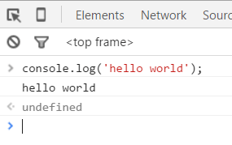
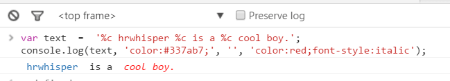
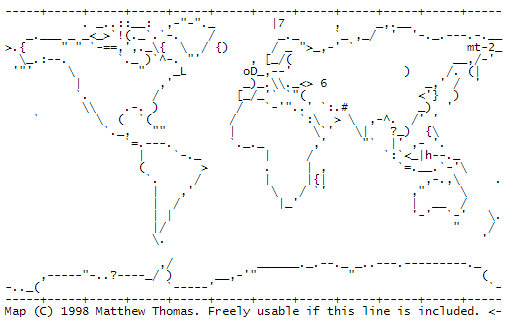
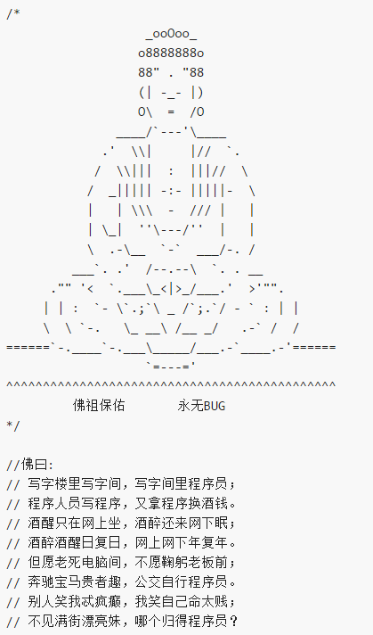
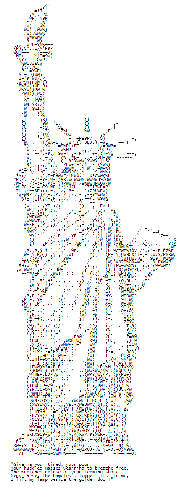

<!DOCTYPE html>


<html lang="en">


<head>
  <meta charset="utf-8" />
   
  <meta name="keywords" content="c,c++,java,python,leetcode,algorithm,reading,life,moods,machine-learning,data-mining,deep-learning,AI" />
   
  <meta name="description" content="一个分享机器学习、算法与数据结构，个人学习心得、读书笔记、生活的博客。" />
  
  <meta name="viewport" content="width=device-width, initial-scale=1, maximum-scale=1" />
  <title>
    站点彩蛋 —— console输出 |  一个分享机器学习、算法与数据结构，个人学习心得、读书笔记、生活的博客。
  </title>
  <meta name="generator" content="hexo-theme-ayer">
  
  <link rel="shortcut icon" href="/favicon.ico" />
  
  
<link rel="stylesheet" href="/dist/main.css">

  
<link rel="stylesheet" href="https://cdn.jsdelivr.net/gh/Shen-Yu/cdn/css/remixicon.min.css">

  
<link rel="stylesheet" href="/css/custom.css">

  
  
<script src="https://cdn.jsdelivr.net/npm/pace-js@1.0.2/pace.min.js"></script>

  
  

  

<link href="https://cdn.bootcss.com/KaTeX/0.11.1/katex.min.css" rel="stylesheet" /></head>

</html>

<body>
  <div id="app">
    
      
    <main class="content on">
      <section class="outer">
  <article
  id="post-site-console-log"
  class="article article-type-post"
  itemscope
  itemprop="blogPost"
  data-scroll-reveal
>
  <div class="article-inner">
    
    <header class="article-header">
       
<h1 class="article-title sea-center" style="border-left:0" itemprop="name">
  站点彩蛋 —— console输出
</h1>
 

    </header>
     
    <div class="article-meta">
      <a href="/site-console-log/" class="article-date">
  <time datetime="2015-11-13T10:53:29.000Z" itemprop="datePublished">2015-11-13</time>
</a> 
  <div class="article-category">
    <a class="article-category-link" href="/categories/code/">code</a> / <a class="article-category-link" href="/categories/code/OtherCodes/">OtherCodes</a>
  </div>
  
<div class="word_count">
    <span class="post-time">
        <span class="post-meta-item-icon">
            <i class="ri-quill-pen-line"></i>
            <span class="post-meta-item-text"> Word count:</span>
            <span class="post-count">652</span>
        </span>
    </span>

    <span class="post-time">
        &nbsp; | &nbsp;
        <span class="post-meta-item-icon">
            <i class="ri-book-open-line"></i>
            <span class="post-meta-item-text"> Reading time≈</span>
            <span class="post-count">2 min</span>
        </span>
    </span>
</div>
 
    </div>
      
    <div class="tocbot"></div>


  
    <div class="article-entry" itemprop="articleBody">
       
  <p>如果你打开我Blog，然后按下F12打开控制台，切换到Console，那么你会看到如下的界面~</p>
<p></p>
<p>这是怎么实现的呢？</p>
<a id="more"></a>
<p>还有好多其他的站点，比如知乎：</p>
<h2 id="site-console-log-zhihu"></h2>
<p>比如百度</p>
<h2 id="site-console-log-baidu"></h2>
<p>其实很多都是用这个做招聘信息~</p>
<p><strong>如何实现这个呢？让人不经意间ctrl + shift + i打开，眼前一亮的东西？</strong></p>
<p>请看本文：</p>
<h2 id="console-log">console.log()</h2>
<p>JS里有个console.log()函数，用于在控制台上输出信息。</p>
<p>上面的图像其实就是输出指定的字符。</p>
<p>你可以直接试试，打开F12控制台（或者直接ctrl + shift + i），输入如下内容</p>
<figure class="highlight javascript"><table><tr><td class="gutter"><pre><span class="line">1</span><br></pre></td><td class="code"><pre><span class="line"><span class="built_in">console</span>.log(<span class="string">&#x27;hello world&#x27;</span>);</span><br></pre></td></tr></table></figure>
<p>效果如下：</p>
<p></p>
<h2 id="console-log-美化">console.log() 美化</h2>
<p>默认输出白底黑字的~丑丑哒</p>
<p>那么怎么改变颜色啥的呢？</p>
<p>答案是用%c来表名格式，在console.log中每个%c对应一系列css属性，如下。</p>
<figure class="highlight javascript"><table><tr><td class="gutter"><pre><span class="line">1</span><br><span class="line">2</span><br></pre></td><td class="code"><pre><span class="line"><span class="keyword">var</span> text  =   <span class="string">&#x27;%c hrwhisper %c is a %c cool boy.&#x27;</span>;</span><br><span class="line"><span class="built_in">console</span>.log(text, <span class="string">&#x27;color:#337ab7;&#x27;</span>, <span class="string">&#x27;&#x27;</span>, <span class="string">&#x27;color:red;font-style:italic&#x27;</span>);</span><br></pre></td></tr></table></figure>
<p>中间特插入%c，否则会从一开始到下一个%c字体都是蓝色的~</p>
<p>效果如下</p>
<p></p>
<h2 id="javascript-多行字符串">Javascript 多行字符串</h2>
<p>在python下，多行字符可以直接’’’ ‘’'包括起来，JS则没有这样的功能，JS多行 字符串方法很多，下面介绍比较优雅的方法</p>
<h3 id="函数注释">函数注释</h3>
<p>这是我觉得最优雅的方法。</p>
<p>直接声明个函数，在函数里写上注释，然后转化为数组，进行注释替换（/* 和*/）</p>
<figure class="highlight javascript"><table><tr><td class="gutter"><pre><span class="line">1</span><br><span class="line">2</span><br><span class="line">3</span><br><span class="line">4</span><br><span class="line">5</span><br><span class="line">6</span><br><span class="line">7</span><br><span class="line">8</span><br><span class="line">9</span><br><span class="line">10</span><br><span class="line">11</span><br><span class="line">12</span><br><span class="line">13</span><br><span class="line">14</span><br><span class="line">15</span><br><span class="line">16</span><br><span class="line">17</span><br><span class="line">18</span><br></pre></td><td class="code"><pre><span class="line"><span class="function"><span class="keyword">function</span> <span class="title">getMultiLine</span>(<span class="params">f</span>) </span>&#123;</span><br><span class="line"><span class="keyword">var</span> lines =f.toString(); </span><br><span class="line"><span class="keyword">return</span> lines.substring(lines.indexOf(<span class="string">&quot;/*&quot;</span>) + <span class="number">3</span>, lines.lastIndexOf(<span class="string">&quot;*/&quot;</span>));   </span><br><span class="line">&#125;</span><br><span class="line"></span><br><span class="line"><span class="keyword">var</span> console_text = <span class="function"><span class="keyword">function</span>(<span class="params"></span>) </span>&#123;  </span><br><span class="line"><span class="comment">/*        </span></span><br><span class="line"><span class="comment">hrwhisper</span></span><br><span class="line"><span class="comment">is</span></span><br><span class="line"><span class="comment">a</span></span><br><span class="line"><span class="comment">handsome </span></span><br><span class="line"><span class="comment">boy.</span></span><br><span class="line"><span class="comment">*/</span>  </span><br><span class="line">&#125;;</span><br><span class="line"></span><br><span class="line"><span class="built_in">console</span>.log(getMultiLine(console_text));</span><br><span class="line"></span><br><span class="line"></span><br></pre></td></tr></table></figure>
<p>请自行运行如上代码 :)</p>
<h2 id="code">Code</h2>
<p>经过前面的探讨，我们只要有好看的字符画，然后丢到函数注释里面就好啦~~~</p>
<p>如，我的blog如下：</p>
<figure class="highlight javascript"><table><tr><td class="gutter"><pre><span class="line">1</span><br><span class="line">2</span><br><span class="line">3</span><br><span class="line">4</span><br><span class="line">5</span><br><span class="line">6</span><br><span class="line">7</span><br><span class="line">8</span><br><span class="line">9</span><br><span class="line">10</span><br><span class="line">11</span><br><span class="line">12</span><br><span class="line">13</span><br><span class="line">14</span><br><span class="line">15</span><br><span class="line">16</span><br><span class="line">17</span><br><span class="line">18</span><br><span class="line">19</span><br><span class="line">20</span><br><span class="line">21</span><br><span class="line">22</span><br><span class="line">23</span><br><span class="line">24</span><br><span class="line">25</span><br><span class="line">26</span><br><span class="line">27</span><br><span class="line">28</span><br><span class="line">29</span><br><span class="line">30</span><br><span class="line">31</span><br><span class="line">32</span><br><span class="line">33</span><br></pre></td><td class="code"><pre><span class="line"> <span class="function"><span class="keyword">function</span> <span class="title">getMultiLine</span>(<span class="params">f</span>) </span>&#123;</span><br><span class="line"><span class="keyword">var</span> lines =f.toString(); </span><br><span class="line"><span class="keyword">return</span> lines.substring(lines.indexOf(<span class="string">&quot;/*&quot;</span>) + <span class="number">3</span>, lines.lastIndexOf(<span class="string">&quot;*/&quot;</span>));   </span><br><span class="line">&#125;</span><br><span class="line"><span class="comment">//字符画不能随意缩进，不然显示会错位</span></span><br><span class="line"><span class="keyword">var</span> console_text = <span class="function"><span class="keyword">function</span>(<span class="params"></span>) </span>&#123;  </span><br><span class="line"><span class="comment">/* </span></span><br><span class="line"><span class="comment">            /~~~~~\        /~~~~~\</span></span><br><span class="line"><span class="comment">               (~&#x27;        ~~~)   </span></span><br><span class="line"><span class="comment">            \    \__________/    /</span></span><br><span class="line"><span class="comment">            /~::::::::         ~\</span></span><br><span class="line"><span class="comment"> /~~~~~~~-_ ::::::::             _-~~~~~~~\</span></span><br><span class="line"><span class="comment">\ ======= /  ::A::;      A     :\ ====== /</span></span><br><span class="line"><span class="comment"> ~-_____-~   _----------------_:: ~-____-~</span></span><br><span class="line"><span class="comment">           /~                  ~\</span></span><br><span class="line"><span class="comment">           /                      \</span></span><br><span class="line"><span class="comment">          (        ()    ()        )</span></span><br><span class="line"><span class="comment">           `\                   ./&#x27;</span></span><br><span class="line"><span class="comment">             ~-_______________-~</span></span><br><span class="line"><span class="comment">                   /~~~~\</span></span><br><span class="line"><span class="comment">                        </span></span><br><span class="line"><span class="comment">                        </span></span><br><span class="line"><span class="comment">                 (________)    </span></span><br><span class="line"><span class="comment">                     ()   </span></span><br><span class="line"><span class="comment"></span></span><br><span class="line"><span class="comment">  努力的人本身就有奇迹 , </span></span><br><span class="line"><span class="comment">  努力让自己更牛逼 ^ ^</span></span><br><span class="line"><span class="comment">          %c by hrwhisper</span></span><br><span class="line"><span class="comment">*/</span>  </span><br><span class="line">&#125;</span><br><span class="line"><span class="built_in">console</span>.log(getMultiLine(console_text),<span class="string">&#x27;color:#337ab7;font-size:18px;font-style:italic&#x27;</span>)</span><br><span class="line"></span><br><span class="line"></span><br></pre></td></tr></table></figure>
<p></p>
<p>其实搜狗输入法自带了字符画（昨天特意下来看看有啥=v=，然后继续用系统自带的输入法。。。windows 10自带输入法已经很好用了的感觉，还不会广告啥的~）</p>
<p>更多好看的字符画：可以google一下或者百度一下字符画~</p>
<p><strong>比如世界地图</strong></p>
<p></p>
<p>还有一个叼叼的：</p>
<p></p>
<p>还有<strong>自由女神像</strong>(Statue Of Liberty)!</p>
<p></p>
 
      <!-- reward -->
      
      <div id="reword-out">
        <div id="reward-btn">
          Donate
        </div>
      </div>
      
    </div>
    

    <!-- copyright -->
    
    <div class="declare">
      <ul class="post-copyright">
        <li>
          <i class="ri-copyright-line"></i>
          <strong>Copyright： </strong>
          
          Copyright is owned by the author. For commercial reprints, please contact the author for authorization. For non-commercial reprints, please indicate the source.
          
        </li>
      </ul>
    </div>
    
    <footer class="article-footer">
       
<div class="share-btn">
      <span class="share-sns share-outer">
        <i class="ri-share-forward-line"></i>
        分享
      </span>
      <div class="share-wrap">
        <i class="arrow"></i>
        <div class="share-icons">
          
          <a class="weibo share-sns" href="javascript:;" data-type="weibo">
            <i class="ri-weibo-fill"></i>
          </a>
          <a class="weixin share-sns wxFab" href="javascript:;" data-type="weixin">
            <i class="ri-wechat-fill"></i>
          </a>
          <a class="qq share-sns" href="javascript:;" data-type="qq">
            <i class="ri-qq-fill"></i>
          </a>
          <a class="douban share-sns" href="javascript:;" data-type="douban">
            <i class="ri-douban-line"></i>
          </a>
          <!-- <a class="qzone share-sns" href="javascript:;" data-type="qzone">
            <i class="icon icon-qzone"></i>
          </a> -->
          
          <a class="facebook share-sns" href="javascript:;" data-type="facebook">
            <i class="ri-facebook-circle-fill"></i>
          </a>
          <a class="twitter share-sns" href="javascript:;" data-type="twitter">
            <i class="ri-twitter-fill"></i>
          </a>
          <a class="google share-sns" href="javascript:;" data-type="google">
            <i class="ri-google-fill"></i>
          </a>
        </div>
      </div>
</div>

<div class="wx-share-modal">
    <a class="modal-close" href="javascript:;"><i class="ri-close-circle-line"></i></a>
    <p>扫一扫，分享到微信</p>
    <div class="wx-qrcode">
      
    </div>
</div>

<div id="share-mask"></div>  
  <ul class="article-tag-list" itemprop="keywords"><li class="article-tag-list-item"><a class="article-tag-list-link" href="/tags/Cool/" rel="tag">Cool</a></li><li class="article-tag-list-item"><a class="article-tag-list-link" href="/tags/Javascript/" rel="tag">Javascript</a></li></ul>

    </footer>
  </div>

   
  <nav class="article-nav">
    
      <a href="/leetcode-additive-number/" class="article-nav-link">
        <strong class="article-nav-caption">上一篇</strong>
        <div class="article-nav-title">
          
            leetcode Additive Number
          
        </div>
      </a>
    
    
      <a href="/leetcode-range-sum-query-2d-immutable/" class="article-nav-link">
        <strong class="article-nav-caption">下一篇</strong>
        <div class="article-nav-title">leetcode Range Sum Query 2D - Immutable</div>
      </a>
    
  </nav>

   
<!-- valine评论 -->
<div id="vcomments-box">
  <div id="vcomments"></div>
</div>
<script src="//cdn1.lncld.net/static/js/3.0.4/av-min.js"></script>
<script src="https://cdn.jsdelivr.net/npm/valine@1.4.14/dist/Valine.min.js"></script>
<script>
  new Valine({
    el: "#vcomments",
    app_id: "fVcjWMD8aI6F0qEfKdUaHa4f-gzGzoHsz",
    app_key: "b26lBsbwmVyxTSnNrsBrnv3U",
    path: window.location.pathname,
    avatar: "monsterid",
    placeholder: "给我的文章加点评论吧~",
    recordIP: true,
  });
  const infoEle = document.querySelector("#vcomments .info");
  if (infoEle && infoEle.childNodes && infoEle.childNodes.length > 0) {
    infoEle.childNodes.forEach(function (item) {
      item.parentNode.removeChild(item);
    });
  }
</script>
<style>
  #vcomments-box {
    padding: 5px 30px;
  }

  @media screen and (max-width: 800px) {
    #vcomments-box {
      padding: 5px 0px;
    }
  }

  #vcomments-box #vcomments {
    background-color: #fff;
  }

  .v .vlist .vcard .vh {
    padding-right: 20px;
  }

  .v .vlist .vcard {
    padding-left: 10px;
  }
</style>

 
     
</article>

</section>
      <footer class="footer">
  <div class="outer">
    <ul>
      <li>
        Copyrights &copy;
        2013-2020
        <i class="ri-heart-fill heart_icon"></i> hrwhisper
      </li>
    </ul>
    <ul>
      <li>
        
        
        
        Powered by <a href="https://hexo.io" target="_blank">Hexo</a>
        <span class="division">|</span>
        Theme - <a href="https://github.com/Shen-Yu/hexo-theme-ayer" target="_blank">Ayer</a>
        
      </li>
    </ul>
    <ul>
      <li>
        
        
        <span>
  <span><i class="ri-user-3-fill"></i>Visitors:<span id="busuanzi_value_site_uv"></span></s>
  <span class="division">|</span>
  <span><i class="ri-eye-fill"></i>Views:<span id="busuanzi_value_page_pv"></span></span>
</span>
        
      </li>
    </ul>
    <ul>
      
    </ul>
    <ul>
      
    </ul>
    <ul>
      <li>
        <!-- cnzz统计 -->
        
      </li>
    </ul>
  </div>
</footer>
      <div class="float_btns">
        <div class="totop" id="totop">
  <i class="ri-arrow-up-line"></i>
</div>

<div class="todark" id="todark">
  <i class="ri-moon-line"></i>
</div>

      </div>
    </main>
    <aside class="sidebar on">
      <button class="navbar-toggle"></button>
<nav class="navbar">
  
  <div class="logo">
    <a href="/"></a>
  </div>
  
  <ul class="nav nav-main">
    
    <li class="nav-item">
      <a class="nav-item-link" href="/">主页</a>
    </li>
    
    <li class="nav-item">
      <a class="nav-item-link" href="/archives">归档</a>
    </li>
    
    <li class="nav-item">
      <a class="nav-item-link" href="/categories">分类</a>
    </li>
    
    <li class="nav-item">
      <a class="nav-item-link" href="/tags">标签</a>
    </li>
    
    <li class="nav-item">
      <a class="nav-item-link" href="/blog-building">博客建设</a>
    </li>
    
    <li class="nav-item">
      <a class="nav-item-link" href="/friend-link">友链</a>
    </li>
    
    <li class="nav-item">
      <a class="nav-item-link" href="/leetcode-algorithm-solution">leetcode题解</a>
    </li>
    
    <li class="nav-item">
      <a class="nav-item-link" href="/messageboard">留言板</a>
    </li>
    
    <li class="nav-item">
      <a class="nav-item-link" href="/about-me">关于我</a>
    </li>
    
  </ul>
</nav>
<nav class="navbar navbar-bottom">
  <ul class="nav">
    <li class="nav-item">
      
      <a class="nav-item-link nav-item-search"  title="Search">
        <i class="ri-search-line"></i>
      </a>
      
      
    </li>
  </ul>
</nav>
<div class="search-form-wrap">
  <div class="local-search local-search-plugin">
  <input type="search" id="local-search-input" class="local-search-input" placeholder="Search...">
  <div id="local-search-result" class="local-search-result"></div>
</div>
</div>
    </aside>
    <script>
      if (window.matchMedia("(max-width: 768px)").matches) {
        document.querySelector('.content').classList.remove('on');
        document.querySelector('.sidebar').classList.remove('on');
      }
    </script>
    <div id="mask"></div>

<!-- #reward -->
<div id="reward">
  <span class="close"><i class="ri-close-line"></i></span>
  <p class="reward-p"><i class="ri-cup-line"></i>请我喝杯咖啡吧~</p>
  <div class="reward-box">
    
    <div class="reward-item">
      
      <span class="reward-type">支付宝</span>
    </div>
    
    
    <div class="reward-item">
      
      <span class="reward-type">微信</span>
    </div>
    
  </div>
</div>
    
<script src="/js/jquery-2.0.3.min.js"></script>


<script src="/js/lazyload.min.js"></script>

<!-- Tocbot -->


<script src="/js/tocbot.min.js"></script>

<script>
  tocbot.init({
    tocSelector: '.tocbot',
    contentSelector: '.article-entry',
    headingSelector: 'h1, h2, h3',
    hasInnerContainers: true,
    scrollSmooth: false,
	scrollSmoothDuration: 420,
    scrollContainer: 'main',
    positionFixedSelector: '.tocbot',
    positionFixedClass: 'is-position-fixed',
    fixedSidebarOffset: 'auto',
	collapseDepth: 2,
  });
</script>

<script src="https://cdn.jsdelivr.net/npm/jquery-modal@0.9.2/jquery.modal.min.js"></script>
<link rel="stylesheet" href="https://cdn.jsdelivr.net/npm/jquery-modal@0.9.2/jquery.modal.min.css">
<script src="https://cdn.jsdelivr.net/npm/justifiedGallery@3.7.0/dist/js/jquery.justifiedGallery.min.js"></script>

<script src="/dist/main.js"></script>

<!-- ImageViewer -->

<!-- Root element of PhotoSwipe. Must have class pswp. -->
<div class="pswp" tabindex="-1" role="dialog" aria-hidden="true">

    <!-- Background of PhotoSwipe. 
         It's a separate element as animating opacity is faster than rgba(). -->
    <div class="pswp__bg"></div>

    <!-- Slides wrapper with overflow:hidden. -->
    <div class="pswp__scroll-wrap">

        <!-- Container that holds slides. 
            PhotoSwipe keeps only 3 of them in the DOM to save memory.
            Don't modify these 3 pswp__item elements, data is added later on. -->
        <div class="pswp__container">
            <div class="pswp__item"></div>
            <div class="pswp__item"></div>
            <div class="pswp__item"></div>
        </div>

        <!-- Default (PhotoSwipeUI_Default) interface on top of sliding area. Can be changed. -->
        <div class="pswp__ui pswp__ui--hidden">

            <div class="pswp__top-bar">

                <!--  Controls are self-explanatory. Order can be changed. -->

                <div class="pswp__counter"></div>

                <button class="pswp__button pswp__button--close" title="Close (Esc)"></button>

                <button class="pswp__button pswp__button--share" style="display:none" title="Share"></button>

                <button class="pswp__button pswp__button--fs" title="Toggle fullscreen"></button>

                <button class="pswp__button pswp__button--zoom" title="Zoom in/out"></button>

                <!-- Preloader demo http://codepen.io/dimsemenov/pen/yyBWoR -->
                <!-- element will get class pswp__preloader--active when preloader is running -->
                <div class="pswp__preloader">
                    <div class="pswp__preloader__icn">
                        <div class="pswp__preloader__cut">
                            <div class="pswp__preloader__donut"></div>
                        </div>
                    </div>
                </div>
            </div>

            <div class="pswp__share-modal pswp__share-modal--hidden pswp__single-tap">
                <div class="pswp__share-tooltip"></div>
            </div>

            <button class="pswp__button pswp__button--arrow--left" title="Previous (arrow left)">
            </button>

            <button class="pswp__button pswp__button--arrow--right" title="Next (arrow right)">
            </button>

            <div class="pswp__caption">
                <div class="pswp__caption__center"></div>
            </div>

        </div>

    </div>

</div>

<link rel="stylesheet" href="https://cdn.jsdelivr.net/npm/photoswipe@4.1.3/dist/photoswipe.min.css">
<link rel="stylesheet" href="https://cdn.jsdelivr.net/npm/photoswipe@4.1.3/dist/default-skin/default-skin.min.css">
<script src="https://cdn.jsdelivr.net/npm/photoswipe@4.1.3/dist/photoswipe.min.js"></script>
<script src="https://cdn.jsdelivr.net/npm/photoswipe@4.1.3/dist/photoswipe-ui-default.min.js"></script>

<script>
    function viewer_init() {
        let pswpElement = document.querySelectorAll('.pswp')[0];
        let $imgArr = document.querySelectorAll(('.article-entry img:not(.reward-img)'))

        $imgArr.forEach(($em, i) => {
            $em.onclick = () => {
                // slider展开状态
                // todo: 这样不好，后面改成状态
                if (document.querySelector('.left-col.show')) return
                let items = []
                $imgArr.forEach(($em2, i2) => {
                    let img = $em2.getAttribute('data-idx', i2)
                    let src = $em2.getAttribute('data-target') || $em2.getAttribute('src')
                    let title = $em2.getAttribute('alt')
                    // 获得原图尺寸
                    const image = new Image()
                    image.src = src
                    items.push({
                        src: src,
                        w: image.width || $em2.width,
                        h: image.height || $em2.height,
                        title: title
                    })
                })
                var gallery = new PhotoSwipe(pswpElement, PhotoSwipeUI_Default, items, {
                    index: parseInt(i)
                });
                gallery.init()
            }
        })
    }
    viewer_init()
</script>

<!-- MathJax -->

<script type="text/x-mathjax-config">
  MathJax.Hub.Config({
      tex2jax: {
          inlineMath: [ ['$','$'], ["\\(","\\)"]  ],
          processEscapes: true,
          skipTags: ['script', 'noscript', 'style', 'textarea', 'pre', 'code']
      }
  });

  MathJax.Hub.Queue(function() {
      var all = MathJax.Hub.getAllJax(), i;
      for(i=0; i < all.length; i += 1) {
          all[i].SourceElement().parentNode.className += ' has-jax';
      }
  });
</script>

<script src="https://cdn.jsdelivr.net/npm/mathjax@2.7.6/unpacked/MathJax.js?config=TeX-AMS-MML_HTMLorMML"></script>
<script>
  var ayerConfig = {
    mathjax: true
  }
</script>

<!-- Katex -->

<!-- busuanzi  -->


<script src="/js/busuanzi-2.3.pure.min.js"></script>


<!-- ClickLove -->

<!-- ClickBoom1 -->

<!-- ClickBoom2 -->

<!-- CodeCopy -->


<link rel="stylesheet" href="/css/clipboard.css">

<script src="https://cdn.jsdelivr.net/npm/clipboard@2/dist/clipboard.min.js"></script>
<script>
  function wait(callback, seconds) {
    var timelag = null;
    timelag = window.setTimeout(callback, seconds);
  }
  !function (e, t, a) {
    var initCopyCode = function(){
      var copyHtml = '';
      copyHtml += '<button class="btn-copy" data-clipboard-snippet="">';
      copyHtml += '<i class="ri-file-copy-2-line"></i><span>COPY</span>';
      copyHtml += '</button>';
      $(".highlight .code pre").before(copyHtml);
      $(".article pre code").before(copyHtml);
      var clipboard = new ClipboardJS('.btn-copy', {
        target: function(trigger) {
          return trigger.nextElementSibling;
        }
      });
      clipboard.on('success', function(e) {
        let $btn = $(e.trigger);
        $btn.addClass('copied');
        let $icon = $($btn.find('i'));
        $icon.removeClass('ri-file-copy-2-line');
        $icon.addClass('ri-checkbox-circle-line');
        let $span = $($btn.find('span'));
        $span[0].innerText = 'COPIED';
        
        wait(function () { // 等待两秒钟后恢复
          $icon.removeClass('ri-checkbox-circle-line');
          $icon.addClass('ri-file-copy-2-line');
          $span[0].innerText = 'COPY';
        }, 2000);
      });
      clipboard.on('error', function(e) {
        e.clearSelection();
        let $btn = $(e.trigger);
        $btn.addClass('copy-failed');
        let $icon = $($btn.find('i'));
        $icon.removeClass('ri-file-copy-2-line');
        $icon.addClass('ri-time-line');
        let $span = $($btn.find('span'));
        $span[0].innerText = 'COPY FAILED';
        
        wait(function () { // 等待两秒钟后恢复
          $icon.removeClass('ri-time-line');
          $icon.addClass('ri-file-copy-2-line');
          $span[0].innerText = 'COPY';
        }, 2000);
      });
    }
    initCopyCode();
  }(window, document);
</script>


<!-- CanvasBackground -->


    
  </div>
</body>

</html>